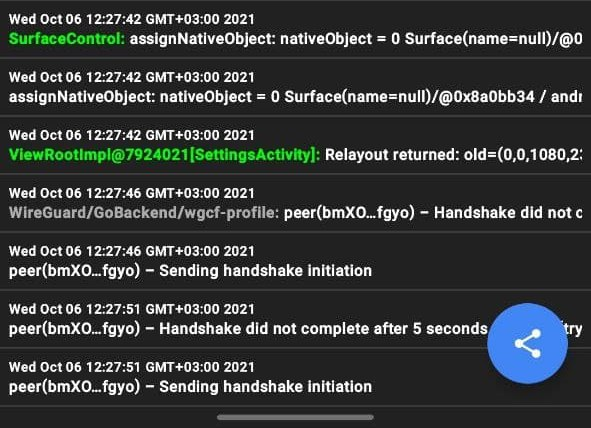

| Ник | Пост | Дата |
|---|---|---|
| User69 | Всем привет! | 2021-09-04T21:33:28.469Z |
| lossenstein(lossenstein) | У меня не работал, а теперь опять начал, когда поменяли IP-адрес cloudflareportal.com. А у вас по-прежнему не работает? | 2021-09-05T05:28:24.438Z |
| User69 | Да, Билайн, Москва. | 2021-09-05T06:16:37.665Z |
| Petro | Cитуация с WARP на провайдерах с ТСПУ (или хотя бы временами задействовавших ТСПУ) в последнее время менялась то в жар, то в холод. Но, по состоянию на сегодняшний день, он работает на:
Не работает на:
Это те операторы, на которых удалось потестировать. Пробовались и частные сервера Wireguard (на разных портах) на мобильном Билайне (Владимирская обл., Московская обл.) - не работает. Предполагаю, что там блокируется по каким-то характерным отпечаткам для этого протокола (или размеру пакетов). Точно сказать затрудняюсь. | 2021-09-10T12:48:02.821Z |
| User69 | Билайн, Москва | 2021-09-28T09:44:23.652Z |
| 0ka(0ka) | Мобильный мегафон, центральный филиал (инет через нижний новогород): | 2021-09-28T09:55:12.279Z |
| User69 |
Ну вот недавно не работал | 2021-09-28T10:14:59.211Z |
| 0ka(0ka) | Мобильный мегафон москва - работает. | 2021-09-28T10:24:10.251Z |
| Petro | Билайн Москва (мобильный) - как перестал работать накануне выборов, так и не работает.  Техническая поддержка оператора отрабатывает задание “Не замечать проблем с этим сервисом и ссылаться, что это он сам не работает” | 2021-10-06T09:32:49.018Z |
| User69 | Ну теперь официально | 2021-12-02T09:29:06.069Z |
| User69 | Всем привет! | 2022-02-28T09:29:39.539Z |
| ValdikSS | Сообщали, что на части провайдеров не работает https://1.1.1.1, к которому обращается Warp. У меня на провайдерах с ТСПУ он доступен. У вас страница открывается? | 2022-02-28T11:28:03.464Z |
| User69 | Да, страница открывается. | 2022-02-28T12:09:16.868Z |
| User69 | Интересно, что при подключении компьютера через мобильную сеть Билайн WARP на компьютере работает. Похоже, есть какие-то особенности подключения именно у мобильного клиента. | 2022-03-14T09:32:12.850Z |
| User69 | Только что проверил на телефоне - ВНЕЗАПНО заработало. | 2022-03-14T12:23:28.766Z |
| 0ka(0ka) | В 17:00 у многих сегодня перестал работать WARP | 2022-03-16T18:05:36.884Z |
| zhenyolka | У меня так же не работает psiphon: бесконечно пытается подключится, но не получается. Наблюдаю лично на 2 операторах с тспу, плюс очень много людей сообщает тоже самое. Warp у многих не работает | 2022-03-16T18:16:27.840Z |
| User69 | Да, перестал подключаться сразу на двух провайдерах. | 2022-03-16T18:43:36.988Z |
| quantalFox | Cloudflare WARP не работает на Yota и ЭР-Телеком. | 2022-03-16T20:28:51.433Z |
| tango | Cloudflare WARP doesn’t work since 2022-03-16. What about other VPNs that use WireGuard? I am trying to find out whether WARP is targeted specifically, or if WARP is blocked as a side effect of blocking the WireGuard protocol. Recall that WireGuard was having trouble in September 2021: Roskomnadzor's plans to block various VPN services · Issue #76 · net4people/bbs · GitHub. It is believed to possibly have been a side effect of blocking BitTorrent. | 2022-03-22T22:04:26.502Z |
| 0ka(0ka) | Wireguard protocol is not blocked, warp endpoint ip is also not blocked. Only wireguard on warp endpoint is blocked. (at least on my home and mobile isp) | 2022-03-23T00:13:02.867Z |
| tango | Cloudflare has a blog post with a graph that shows a rapid increase in the use of WARP from Russia, with a sudden decrease on 2022-03-16 and slow growth since then. There are no units on the graph, so it’s anybody’s guess what exactly is being counted.
I suppose that difference between before and after 16 March is the difference between networks that have TSPU and networks that don’t have TSPU. | 2022-04-07T21:24:33.045Z |
| ani917(ani) | пользуюсь warp через wireguard где надо поменять endpoint | 2023-08-12T18:36:40.520Z |
| jestxfot(YoutubeNotWork) | Подскажите как настроить | 2023-08-12T21:38:55.390Z |
| ladykolotushkina | Не пользуйтесь WARP это иногда бессмысленно, но чаще просто опасно, потому что иллюзия. | 2023-08-13T08:10:14.963Z |
| Xunlei | 2023-08-13T13:53:35.591Z |
{kind=link}